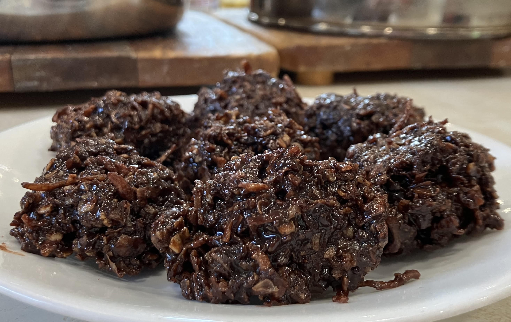

Haystack Cookies

Description
Haystack cookies are a delicious recipe that is quick and easy.
These cookies don't need to be baked, so they come together quickly.
With only a few ingredients, you'll have a family favourite ready to
go!
Ingredients
- 1/2 c. margarine
- 1/2 c. milk
- 1 c. sugar
- 1 tsp. vanilla
- 3 c. oatmeal
- 1/2 c. cocoa
- 1 c. coconut
Steps
- Boil the margarine, milk, and sugar together for 5 minutes.
- Add vanilla.
- Pour over the cocoa, coconut, and oatmeal.
- Drop by the spoon onto waxed paper. Cool.
Home